Префектура Окинава · Наха, Кин и Гинован · сладости
Сладости Окинавы: тэмпура из батата, шу с таро, тофа, мёд Сюри, печёные пончики и булочка с орехами
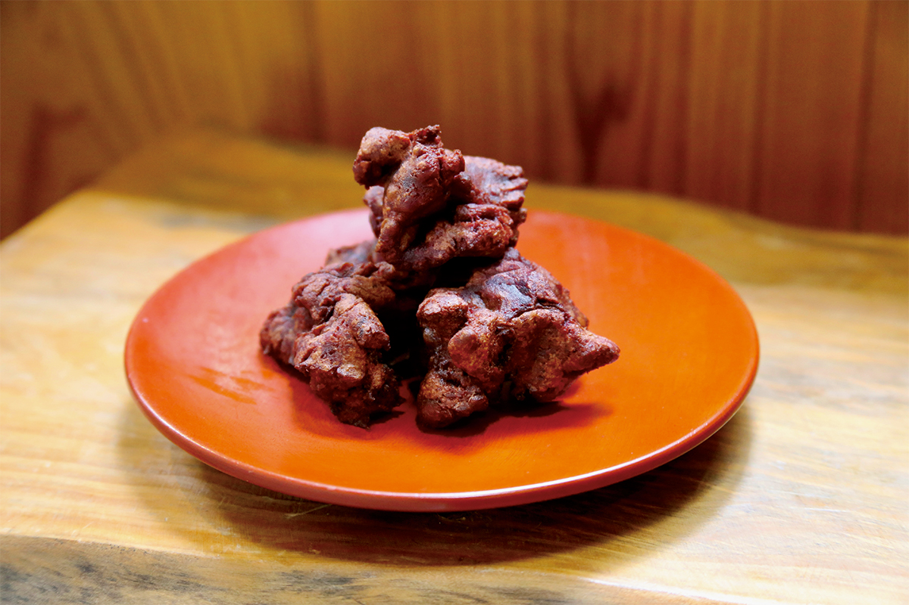
Фотограф, который больше тридцати лет живёт на Окинаве и снимает её острова, везде, куда приезжал на съёмки, находил сладости. Ещё шесть адресов из его списка: от блюда королевской кухни до булочной, открытой в 2021 году.
Батат
«Цути каору»: тэмпура королевской кухни
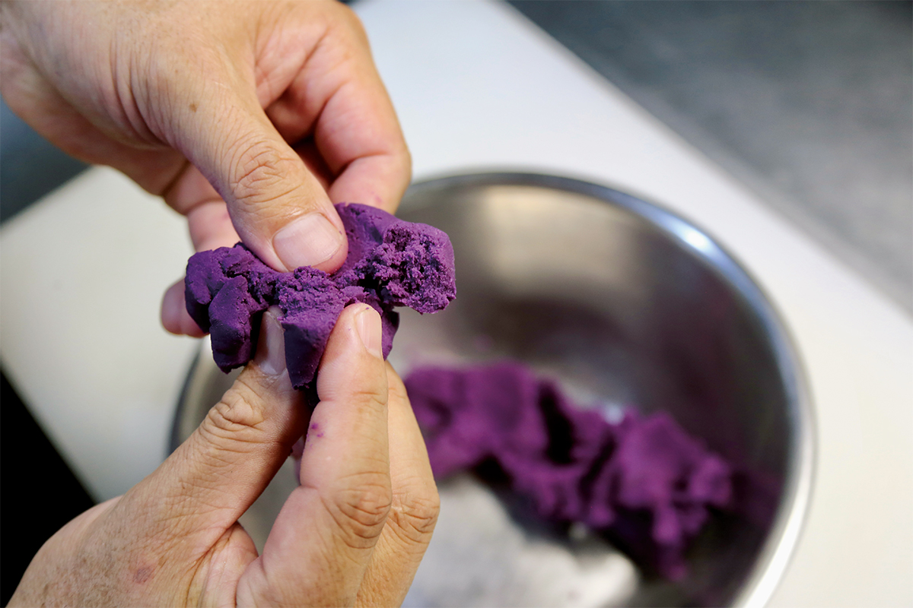
При дворе королевства Рюкю «умукудзи-тэмпуру» подавали как одно из блюд придворной кухни. Её делают из фиолетового батата и «умукудзи», бататового крахмала. Батат запаривают и разминают, вымешивают с крахмалом, солью, сахаром и водой и жарят в масле. Сегодня это обычная домашняя сладость, которую можно купить в любой лавке, но форма у неё везде своя: круглые шарики, плоские овалы, длинные палочки.
Совсем ни на что не похожа тэмпура ресторана «Цути каору» в Нахе. Здесь следуют старому окинавскому правилу «еда это кусуймун», то есть лекарство, выбирают местные продукты по сезону и готовят их так, чтобы сохранить их силу. Хозяин и повар родом из префектуры Кагава. Он учился в ресторане окинавской кухни у себя на родине, потом переехал на Окинаву, около полутора лет работал в «Паяо», филиале старого ресторана «Уридзун», и в 2013 году открыл своё дело.
«Был момент, когда я понял, что зря думал, будто разобрался в окинавской кухне. Тогда я решил вернуться к классическим домашним блюдам и заново выстроить основу. Умукудзи-тэмпура появилась у меня как раз тогда»
хозяин ресторана
Больше всего он думал о текстуре: хотелось, чтобы тэмпура была хрустящей и тягучей вся целиком, а не местами. Для этого нужно было увеличить площадь, которая жарится в масле. Он вспомнил, как когда-то в «Паяо» работал старший повар, слегка скрутил тесто, и получилось именно то, чего он добивался.
Порция стоила 650 иен в 2022 году. Сахара в тесте немного, чтобы тэмпура годилась и в закуску к выпивке.
«Форма неровная, зато весёлая текстура и глубокая сладость батата остаются до последнего кусочка. Окинавская домашняя кухня простая, но в ней много глубины. Буду рад, если гости это почувствуют»
хозяин ресторана
Фотограф благодарит поваров за то, что блюдо королевской кухни вернули таким вкусным. «Хрустит, а внутри мягкое. От такой текстуры старику просто счастье!»
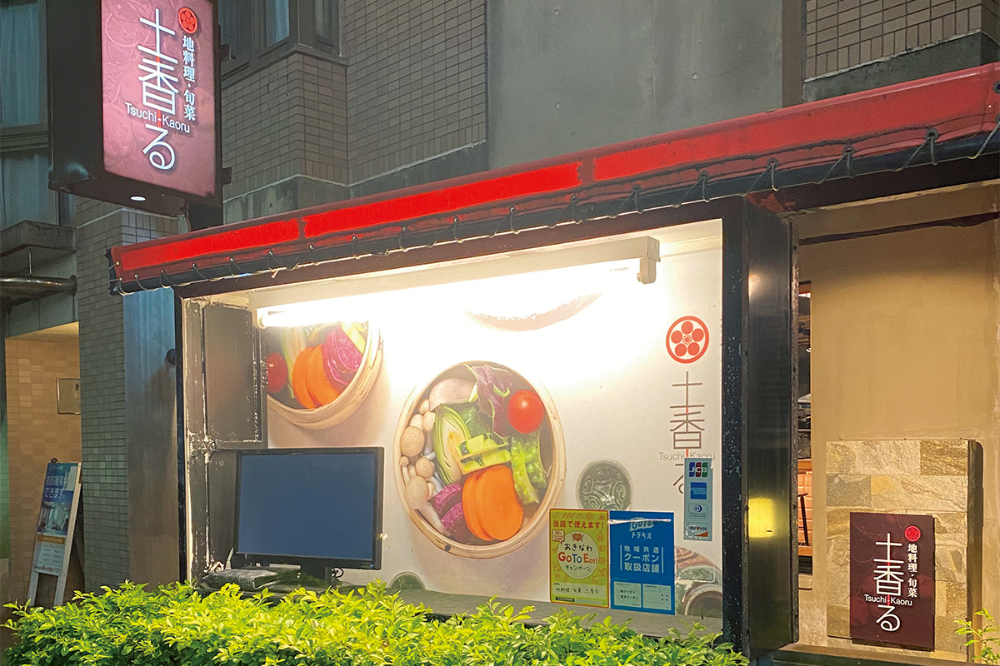
«Цути каору»
- Адрес
- префектура Окинава, Наха, Мацуо, 2-6-24, цокольный этаж
- Телефон
- +81 98-943-9460
- Часы работы
- 17:00–23:00 (последний заказ в 22:00)
- Выходные
- среда
Таро
Marmele: заварное пирожное с таро из Кина
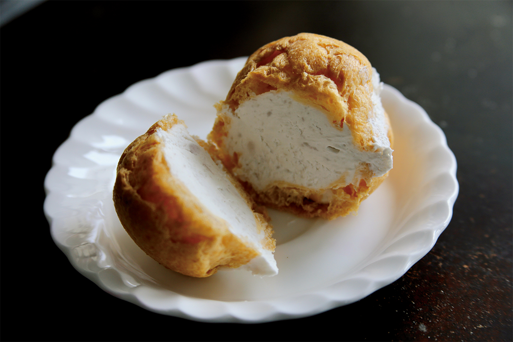
Таро, «та-нму» по-окинавски, один из традиционных овощей Окинавы: его выращивают на заливных полях. Вокруг большого клубня вырастает много маленьких, поэтому таро считается добрым знаком для продолжения рода, и без него не обходится праздничная еда. Хорошо он растёт только там, где чистая вода. В посёлке Кин в центральной части острова Окинава много родников, и таро здесь выращивают давно.
В 2005 году посёлок попросил сделать из местного продукта сладость. За дело взялись супруги, которые держат в Кине кондитерскую Marmele. Сначала не было ясно, как превратить таро во вкусный десерт, и решили начать с главного товара лавки, заварного пирожного. Таро приходит от фермеров уже запаренным. Его чистят, разминают и уваривают с сахаром в пасту, пасту смешивают со сливками и наполняют ею шу. Пробовать давали соседям, от детей до взрослых, и примерно за три месяца проб и ошибок появилось «та-нму шу».
Дольше всего думали, оставлять ли кусочки таро крупными или растирать мелко.
«Хотелось, чтобы его ели и те, кто таро не любит. Поэтому в итоге мы растёрли его мелко и сделали крем гладким»
хозяйка кондитерской
Фотограф с ней согласен: «Вот это едва заметное зёрнышко таро и есть самое прекрасное». Он любит и заварные пирожные, и таро, поэтому сразу купил шу, когда увидел его на стоянке Накагусуку на скоростной дороге. Таро он ел и в виде дэнгаку, и жареным, но не думал, что из него выйдет такой вкусный десерт.
Около 2005 года кондитером в лавку пришёл третий сын хозяев. Новые сладости из таро семья придумывает вместе: рулеты, монблан и другие.
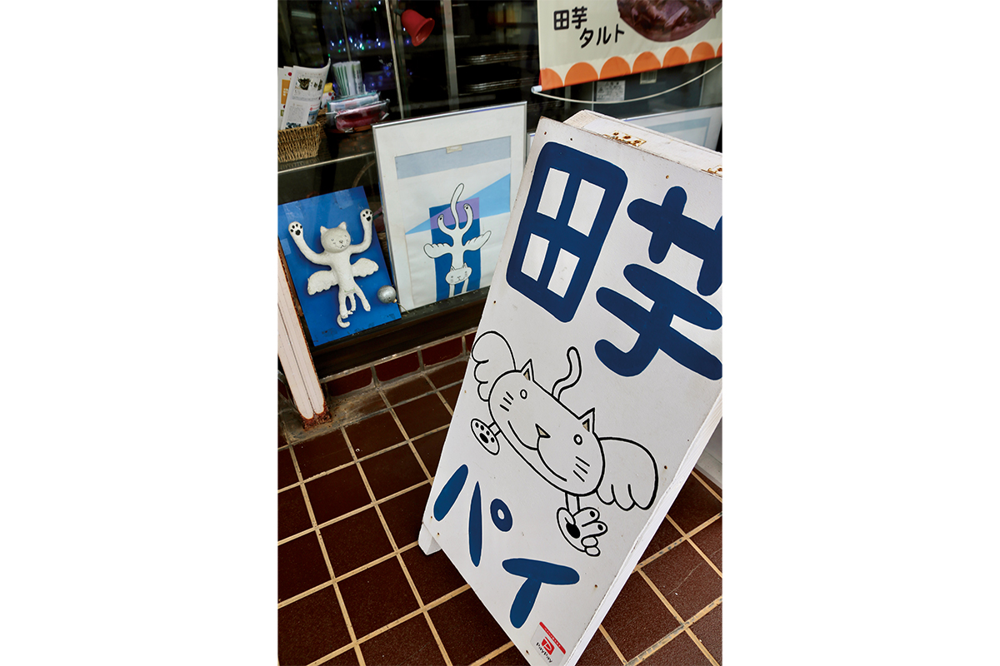
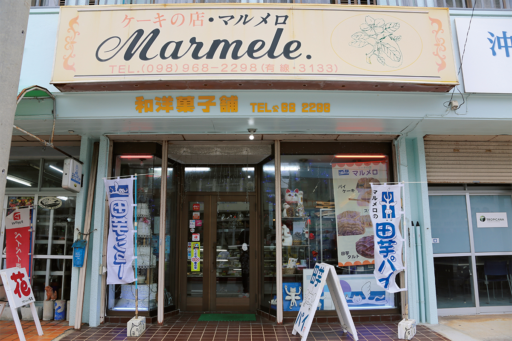
Marmele
- Адрес
- префектура Окинава, уезд Кунигами, посёлок Кин, Кин, 146
- Телефон
- +81 98-968-2298
- Часы работы
- 10:00–20:30
- Выходные
- воскресенье
Тофа
«Тайвань тофа-я»: соевый десерт с тапиокой
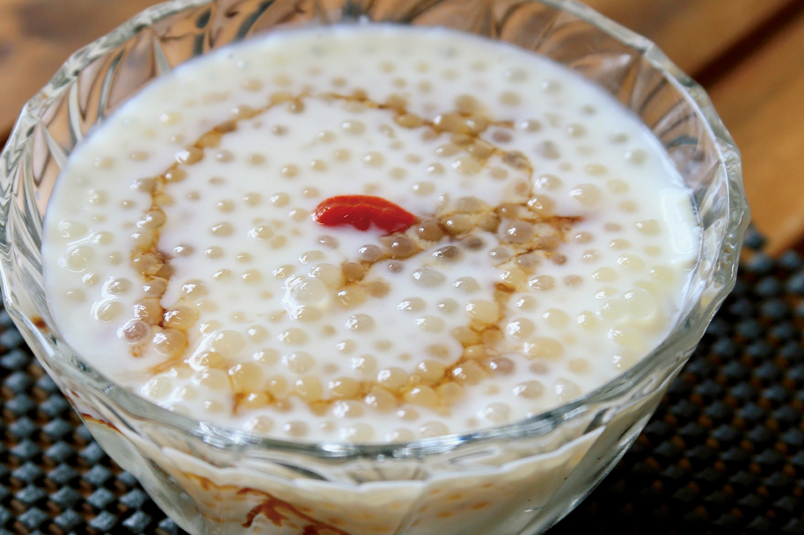
Лет тридцать назад фотограф ел в одном ресторане Нахи «сайкокубэй», десерт с тапиокой из придворной кухни королевства Рюкю. Узнав, что похожая сладость есть и на Тайване, он захотел её попробовать и нашёл в «Тайвань тофа-я».
Тофа, нежный соевый пудинг, по словам хозяйки, главный десерт Тайваня, и едят его обычно с тапиокой, арахисом и другими добавками. Хозяйка училась его готовить на Тайване и делает тофа так, как там: подогревает соевое молоко и сворачивает его гипсом, сульфатом кальция.
«На желатине такой текстуры не получится»
хозяйка лавки
Тофа воздушный, гладкий и тает во рту, от него трудно оторваться.
«При королевстве Рюкю сюда пришло много еды из Китая и с Тайваня, и сайкокубэй, который я когда-то ел, такая же сладость. Тайвань и Окинава до сих пор острова-братья. Весело, что здесь можно попробовать настоящий вкус»
фотограф
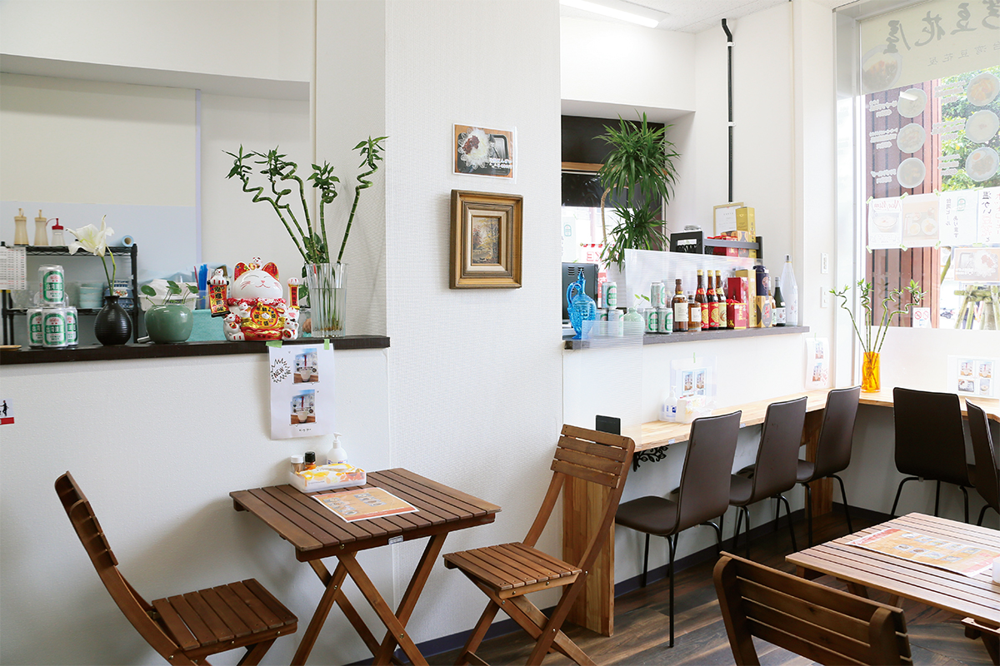
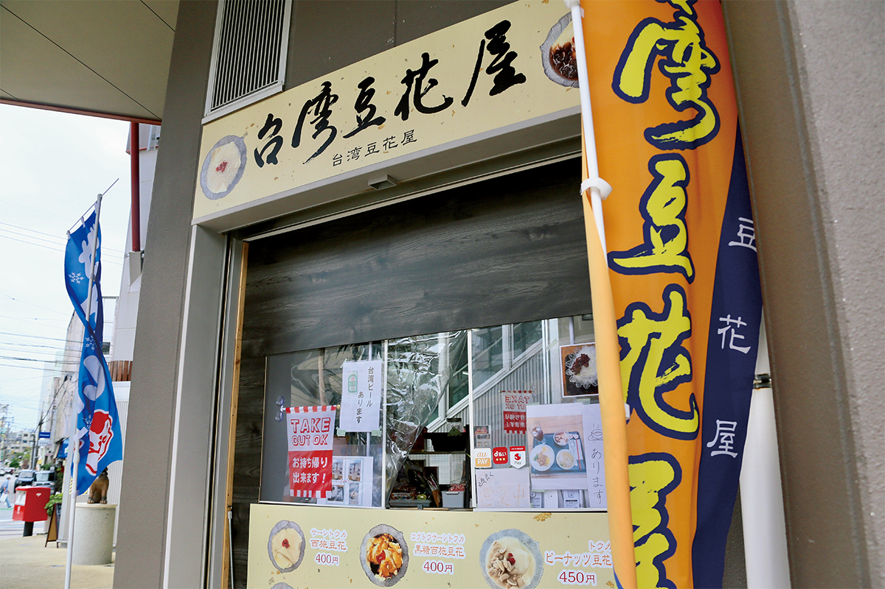
«Тайвань тофа-я»
- Адрес
- префектура Окинава, Наха, Хигава, 2-3-2, «Ноурэн Плаза», 1-й этаж
- Телефон
- +81 98-996-2030
- Часы работы
- 10:00–18:00
- Выходные
- нерегулярные
Мёд
«Аракаки ёхоэн»: цветы Сюри в банке
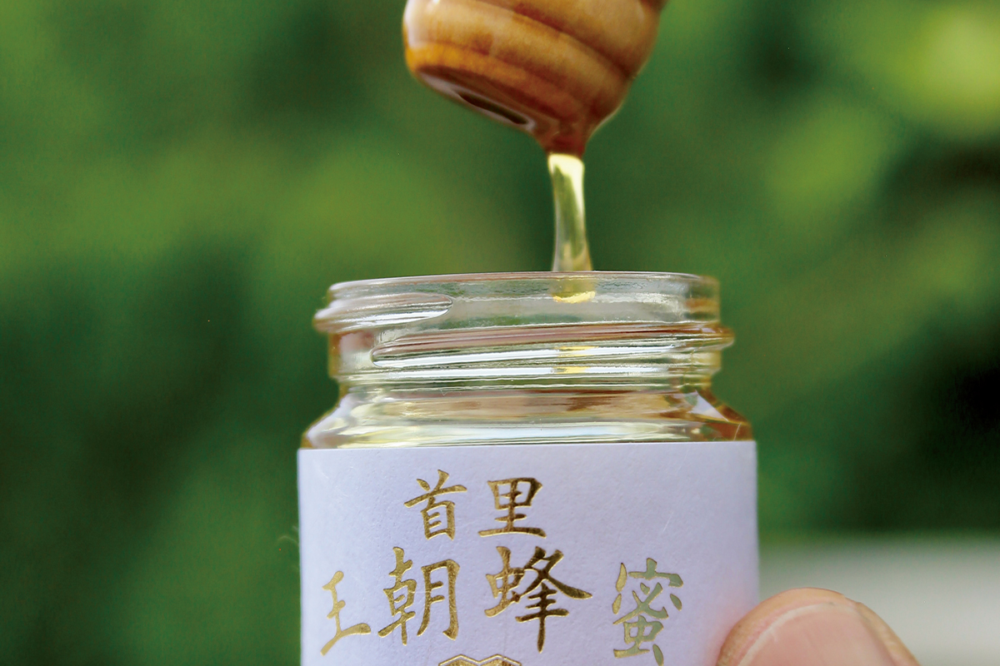
Пасеку «Аракаки ёхоэн» основали в 1954 году, когда мёд на Окинаве ещё мало кто знал. Здесь собирают мёд только от пчёл, которые свободно летают и берут нектар с диких цветов. Пчела улетает от улья примерно на два километра, и вкус мёда зависит от того, какие цветы растут вокруг. Поэтому ульи стоят в 20 местах по всей префектуре, и у мёда из каждого района свой вкус.
Хозяин пасеки в третьем поколении заметил, что в Сюри стало меньше медоносов, и вместе с жителями сажает цветы: он хочет, чтобы люди и природа жили в городе рядом. Из этой работы и появился «Мёд королевского Сюри»: мягкий, с благородной сладостью, со вкусом цветов Сюри. В 2022 году 50 г стоили 864 иены.
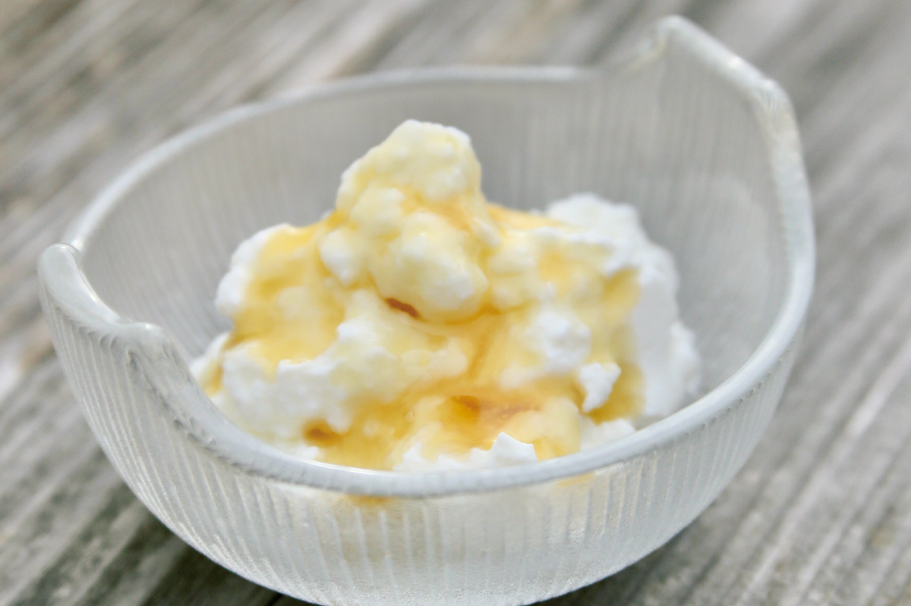
«Мёд, собранный в Сюри, это ведь роскошь! Сейчас я больше всего люблю поливать им греческий йогурт»
фотограф
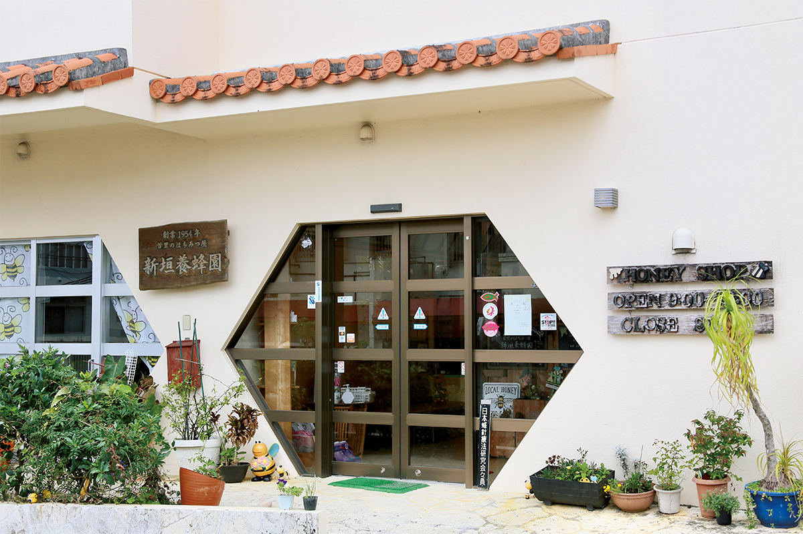
«Аракаки ёхоэн»
- Адрес
- префектура Окинава, Наха, Сюри-Киндзё, 1-29
- Телефон
- +81 98-884-0814
- Часы работы
- 9:00–18:00
- Выходные
- воскресенье
Пончики
HYGGE: печёные, а не жареные
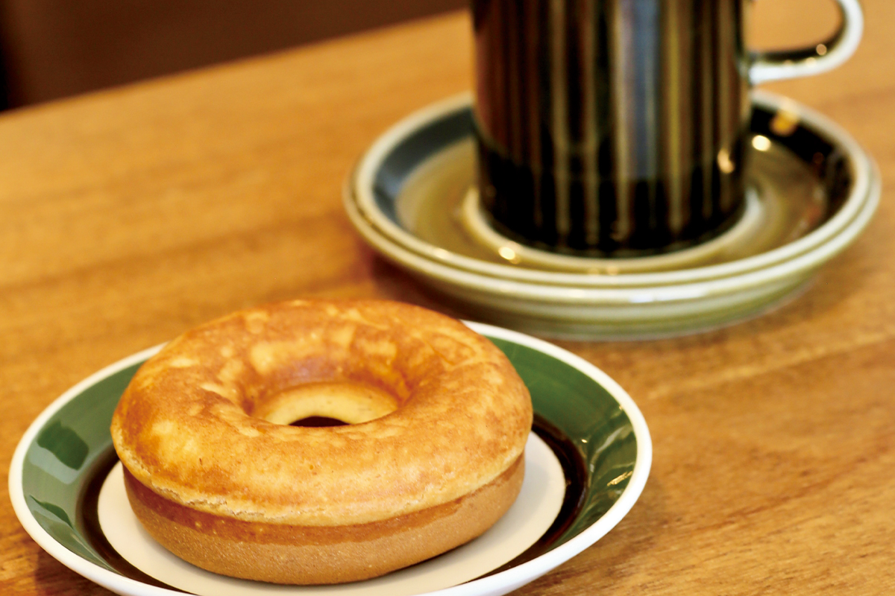
Всё началось с пончиков, которые хозяйка пекла для своего сына. Потом она открыла лавку, чтобы у детей района была сладость, которую им можно давать без опаски. Консервантов здесь нет, тростникового сахара совсем немного, а пончики не жарят, а пекут, поэтому вкус у них простой и мягкий.
Главное здесь тесто: японская пшеничная мука, цельнозерновая мука и мука из бурого риса в собственной пропорции. Вместо молока в тесто идёт сыворотка, которая остаётся при приготовлении йогурта. Её делает сыроварня Cheeseanista, и благодаря ей пончики «тягучие, но пышные». Сладости в них мало, поэтому их можно разрезать и положить внутрь овощи или полить мёдом.
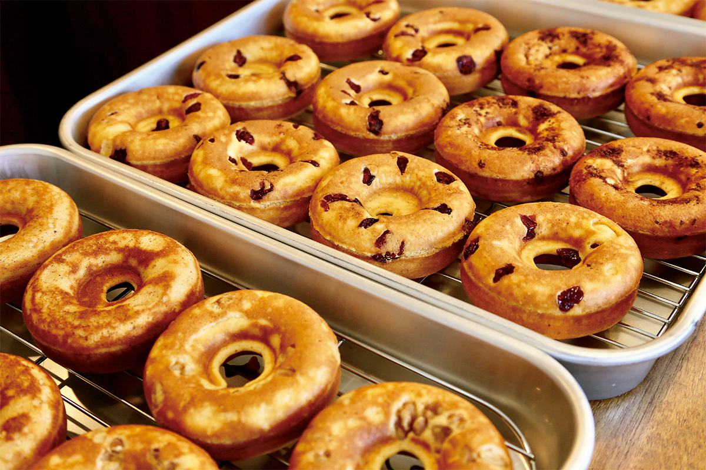
«Здешние пончики не сладкие и не жареные! За это я их и люблю. Из шести вкусов в простом сильнее всего чувствуется сам продукт, не остановиться»
фотограф
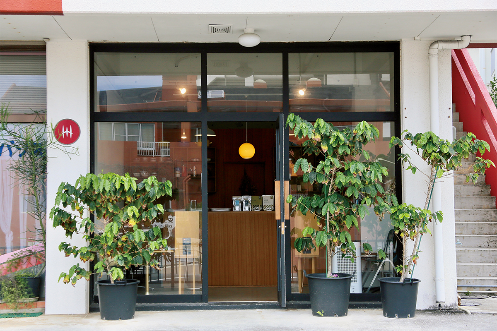
HYGGE
- Адрес
- префектура Окинава, Гинован, Ояма, 2-23-1
- Телефон
- +81 90-1947-0002
- Часы работы
- 12:00–18:00
- Выходные
- воскресенье и понедельник
Булочная
Boulangerie Le Prêt à Porter: анпан с грецким орехом
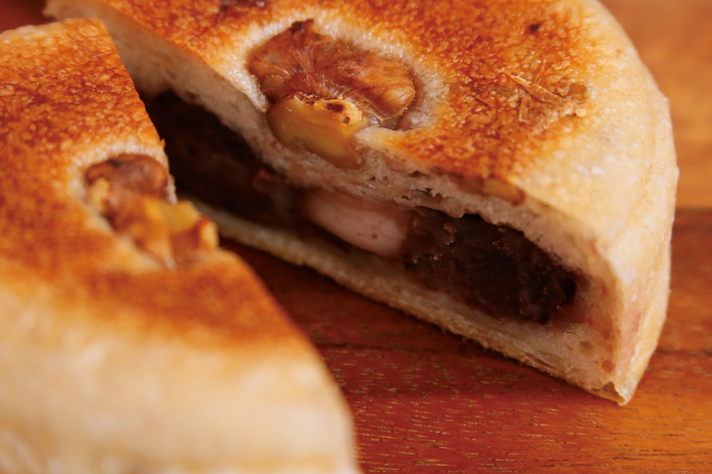
Хозяин булочной родом из префектуры Токусима. Он мечтал открыть пекарню на юге, у чистого моря, и ради этого переехал на Окинаву. Он работал в кафе Токио и в отелях Окинавы, а в апреле 2021 года открыл Boulangerie Le Prêt à Porter. «Прет-а-порте» означает дорогую готовую одежду, а название выбрано под идею лавки: «зрелый хлеб для взрослых».
«Когда-нибудь я хочу сделать булочную, где хлеб пекут на заказ»
хозяин булочной
Отзывы покупателей он охотно берёт в работу и пробует превратить в новый хлеб. Так появился анпан с грецким орехом, где хрустящий орех встречается с плотной бобовой пастой. Эта булочка, придуманная вместе с соседями, стала главной в лавке.
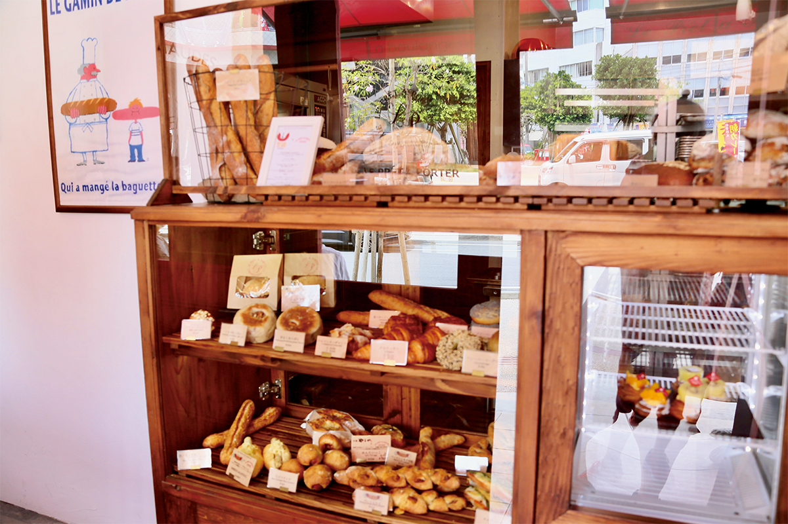
«Я хожу сюда за багетом с колбаской tesio, и однажды заметил анпан с моими любимыми грецкими орехами. А внутри ещё и моти, какая роскошь! С тех пор я его поклонник»
фотограф
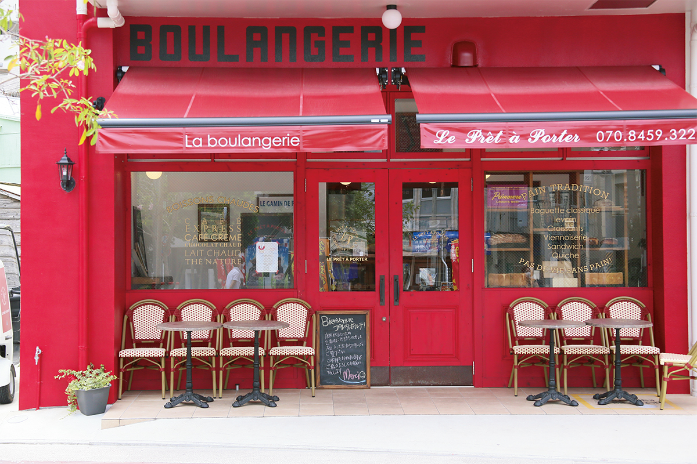
Boulangerie Le Prêt à Porter
- Адрес
- префектура Окинава, Наха, Хигава, 2-2-5
- Телефон
- +81 70-8459-3227
- Часы работы
- 7:00–19:00
- Выходные
- среда
Фото: Кэнго Таруми.